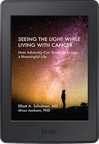

The Book
In "Seeing The Light While Living With Cancer," Dr. Elliott Schulman, a practicing neurologist, takes us through his personal journey with pancreatic cancer. This compassionate and heartfelt book offers unique insight into a journey of healing in a practical and personal way. The author allows the reader to experience his pathway of initial shock, depression and anger.
He then creates a positive and powerful way to deal with his illness. It is a compelling journey that involves his wife Bonnie, and entire family. With the help of Bonnie and his therapist, Dr. Schulman writes about the challenges, frustrations and land mines he encounters along the way, and the tools he had to learn and put into practice in order to keep his head above the stormy sea of fear and despair.
In reading this personal story of grit and love, the reader can learn about strategies he used to maintain positivity and control. He eloquently addresses the power of faith, gratitude and a daily appreciation of living life day by day.
Throughout the book, his colleague and co-author, Dr. Moss Jackson, a practicing psychologist, provides a running commentary from a psychological perspective. Dr. Jackson addresses the critical challenges and skills Dr. Schulman had to learn to transform his diagnosis and illness into a powerful engagement with life. He faces adversity to learn the key lessons about living a productive life. He keenly points to the ability to move from being a passive cancer victim to being a Life Navigator.
If you or a loved one has cancer and want to discover what is possible beyond accepting a path of just surviving, and instead, learning how to see the light and walk your own powerful path, this is a must read!
About the Authors
Dr. Elliott Schulman

Dr. Elliott Schulman was born in Buffalo N.Y. After his graduation from medical school, he trained at Georgetown University Hospital, finishing his residency in Neurology.
He moved to the suburbs of Philadelphia, where he continues to practice Neurology. His special interests include Refractory Headache, and the effect of abuse on migraine headache prevalence. He has written several scientific papers and lectured extensively. He is married and has two sons, and a new daughter-in-law, as well as two rescue dogs, Lilly and Jax.
He was diagnosed with pancreatic cancer in December, 2019.
Dr. Moss Jackson

Dr. Moss Jackson is a clinical psychologist who is Founder and Director of the Center for Psychological Services in Ardmore, PA.
Along with a focus on treating anxiety, trauma and PTSD, Dr. Jackson has developed strategies to enhance well-being through energy healing and belief management. He is also a Success Coach and has helped athletes, coaches, leaders and adolescents to reduce performance anxiety and increase performance excellence. He was an initial presenter at the 205 Raadfest Conference where he presented on "The Psychology of Immortality."
He is the author of four other books and is currently working on his fifth, entitled, "Anxiety Sucks, You Don’t Have to Suffer." He was diagnosed with pancreatic cancer in 2010. He is now alive and well, practicing his craft and enjoying time at his beach house with his wife, Judy, their children and three grandchildren.
Outreach
A cancer diagnosis affects everyone, including those closest to the patient. Supporting your loved one through their journey is of the utmost importance, but there are many ways to inspire hope and provide caring comfort. If you or someone close to you has been touched by this disease we offer these additional avenues of support.
Elliott's Army
Content about the fundraiser
Pancreatic Cancer Action Network
 The Pancreatic Cancer Action Network (PanCAN) offers a free service for pancreatic cancer patients, caregivers and loved ones that gives personalized, compassionate support and comprehensive services and resources needed to navigate the disease, treatment options and more. Contact PanCAN Patient Services today and connect with a case manager who can help.
The Pancreatic Cancer Action Network (PanCAN) offers a free service for pancreatic cancer patients, caregivers and loved ones that gives personalized, compassionate support and comprehensive services and resources needed to navigate the disease, treatment options and more. Contact PanCAN Patient Services today and connect with a case manager who can help.
The Pancreatic Cancer Action Network’s (PanCAN) vision is to create a world in which all patients with pancreatic cancer will thrive. Make a donation today – your gift of any size can help improve survival for pancreatic cancer.
Purchase
Seeing The Light While Living With Cancer is currently available in both digital and traditional formats. You can purchase either version via Amazon:
Kindle edition
For those that prefer to read using an Amazon Kindle or other eBook reader. Purchase and download to your Kindle.